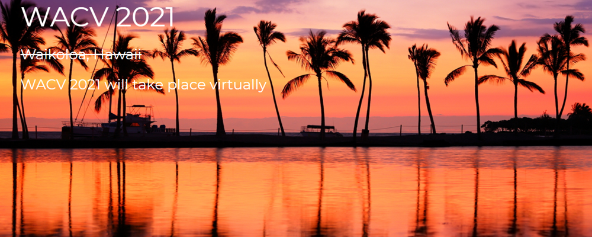

ConferenceTemplate 2525
June 31, 2525
University Name, and City Maybe
Autonomous Vehicle Vision 2021 (AVV'21)
The Autonomous Vehicle Vision 2021 (AVV’21) workshop aims to gather researchers and engineers from both academia and industry to discuss the latest advances in autonomous vehicle visual perception. In this one-day workshop, we will have regular paper presentations, invited speakers, and technical challenges, to present the state of the art as well as the challenges in autonomous vehicle perception, localization and mapping. We plan to host several challenges to understand the current status of computer vision algorithms in solving the environmental perception problems for autonomous driving. We have prepared a number of large-scale, synthetic/real-world datasets with annotations by Hong Kong University of Science and Technology (HKUST), CalmCar, UDI, ATG Robotics, etc. Based on these datasets, three challenges will be hosted. Specifically, they are HKUST-UDI UDA Challenge (unsupervised domain adaptation from synthetic scenarios to real-world scenarios) and CalmCar Multi-Object Tracking Challenge (car tracking and ego-motion estimation).
Call for Papers
Here’s a good place to list the organizers and sponsors of the conference,
as well as list contact information for the organizers,
and show off the logos of the sponsors.
It looks like his conference was sponsored by kittens!